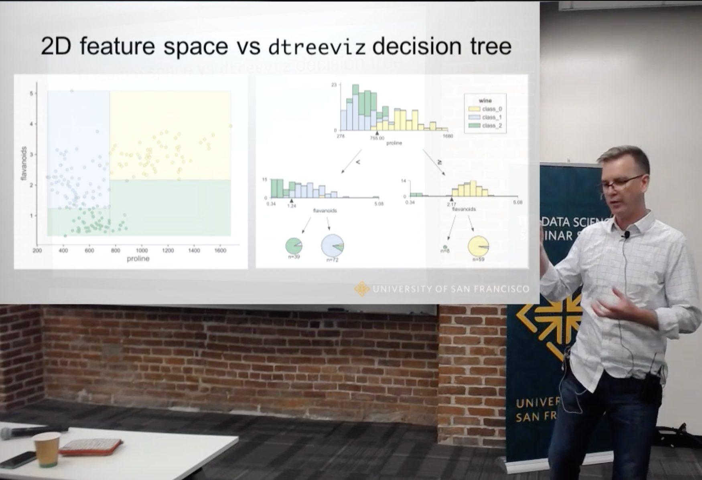

explained.ai
Deep explanations of machine learning and related topics.Website created by Terence Parr.
 Terence is a professor of computer science and was founding director of the MS in data science program at the University of San Francisco. While he is best known for creating the ANTLR parser generator, Terence actually started out studying neural networks in grad school (1987). After 30 years of parsing, he's back to machine learning and really enjoys trying to explain complex topics deeply and in the simplest possible way. Follow @the_antlr_guy.
Terence is a professor of computer science and was founding director of the MS in data science program at the University of San Francisco. While he is best known for creating the ANTLR parser generator, Terence actually started out studying neural networks in grad school (1987). After 30 years of parsing, he's back to machine learning and really enjoys trying to explain complex topics deeply and in the simplest possible way. Follow @the_antlr_guy.
Articles
Clarifying exceptions and visualizing tensor operations in deep learning code (October 2020)

One of the biggest challenges when writing code to implement deep learning networks is getting all of the tensor (matrix and vector) dimensions to line up properly, even when using predefined network layers. This article describes a new library called TensorSensor that clarifies exceptions by augmenting messages and visualizing Python code to indicate the shape of tensor variables. It works with Tensorflow, PyTorch, and Numpy, as well as higher-level libraries like Keras and fastai. See also the TensorSensor implementation slides (PDF).
Explaining RNNs without neural networks (July 2020)

Vanilla recurrent neural networks (RNNs) form the basis of more sophisticated models, such as LSTMs and GRUs. But, sometimes the neural network metaphor makes it less clear exactly what's going on. This articles explains RNNs without neural networks, stripping them down to its essence—a series of vector transformations that result in embeddings for variable-length input vectors. I provide full PyTorch implementation notebooks that use just linear algebra and the autograd feature.
A visual explanation for regularization of linear models (May 2020)

Linear and logistic regression models are important because they are interpretable, fast, and form the basis of deep learning neural networks. Unfortunately, linear models have a tendency to chase outliers in the training data, which often leads to models that don't generalize well to new data. To produce models that generalize better, we all know to regularize our models. While there are lots of articles on the mechanics of regularized linear models, we've lack a simple and intuitive explanation for what exactly is going on during regularization. The goal of this article is to explain how regularization behaves visually, dispelling some myths and answering important questions along the way.
How to visualize decision trees (October 2018)

(See video discussion.) Decision trees are the fundamental building block of gradient boosting machines and Random Forests(tm), probably the two most popular machine learning models for structured data. Visualizing decision trees is a tremendous aid when learning how these models work and when interpreting models. Unfortunately, current visualization packages are rudimentary and not immediately helpful to the novice. For example, we couldn't find a library that visualizes how decision nodes split up the feature space. So, we've created a general package called dtreeviz for scikit-learn decision tree visualization and model interpretation.
How to explain gradient boosting (June 2018)

Gradient boosting machines (GBMs) are currently very popular and so it's a good idea for machine learning practitioners to understand how GBMs work. The problem is that understanding all of the mathematical machinery is tricky and, unfortunately, these details are needed to tune the hyper-parameters. (Tuning the hyper-parameters is required to get a decent GBM model unlike, say, Random Forests.) Our goal in this article is to explain the intuition behind gradient boosting, provide visualizations for model construction, explain the mathematics as simply as possible, and answer thorny questions such as why GBM is performing “gradient descent in function space.”
The Matrix Calculus You Need For Deep Learning (February 2018)

This article explains all of the matrix calculus you need in order to understand the training of deep neural networks. Most of us last saw calculus in school, but derivatives are a critical part of machine learning, particularly deep neural networks, which are trained by optimizing a loss function. Pick up a machine learning paper or the documentation of a library such as PyTorch and calculus comes screeching back into your life like distant relatives around the holidays. And it's not just any old scalar calculus that pops up--you need differential matrix calculus, the shotgun wedding of linear algebra and multivariate calculus. (printable PDF at arxiv.org)
Beware Default Random Forest Importances (March 2018)

Training a model that accurately predicts outcomes is great, but most of the time you don't just need predictions, you want to be able to interpret your model. The problem is that the scikit-learn Random Forest feature importance and R's default Random Forest feature importance strategies are biased. To get reliable results in Python, use permutation importance, provided here and in our rfpimp package (via pip). For R, use importance=T in the Random Forest constructor then type=1 in R's importance() function.
Books
The Mechanics of Machine Learning
Terence Parr and Jeremy HowardThis book is a primer on machine learning for programmers trying to get up to speed quickly. You'll learn how machine learning works and how to apply it in practice. We focus on just a few powerful models (algorithms) that are extremely effective on real problems, rather than presenting a broad survey of machine learning algorithms as many books do. Co-author Jeremy used these few models to become the #1 competitor for two consecutive years at Kaggle.com. This narrow approach leaves lots of room to cover the models, training, and testing in detail, with intuitive descriptions and full code implementations.
This is a book in progress; 9 chapters posted.
Academic papers
Nonparametric Feature Impact and Importance (June 2020)

Practitioners use feature importance to rank and eliminate weak predictors during model development in an effort to simplify models and improve generality. Unfortunately, they also routinely conflate such feature importance measures with feature impact, the isolated effect of an explanatory variable on the response variable. This can lead to real-world consequences when importance is inappropriately interpreted as impact for business or medical insight purposes. The dominant approach for computing importances is through interrogation of a fitted model, which works well for feature selection, but gives distorted measures of feature impact. In this paper, we give mathematical definitions of feature impact and importance, derived from partial dependence curves, that operate directly on the data. To assess quality, we show that features ranked by these definitions are competitive with existing feature selection techniques using three real data sets for predictive tasks.
Partial Dependence through Stratification (July 2019)

Partial dependence curves (FPD) introduced by Friedman, are an important model interpretation tool, but are often not accessible to business analysts and scientists who typically lack the skills to choose, tune, and assess machine learning models. It is also common for the same partial dependence algorithm on the same data to give meaningfully different curves for different models, which calls into question their precision. Expertise is required to distinguish between model artifacts and true relationships in the data. In this paper, we contribute methods for computing partial dependence curves, for both numerical (StratPD) and categorical explanatory variables (CatStratPD), that work directly from training data rather than predictions of a model. Our methods provide a direct estimate of partial dependence, and rely on approximating the partial derivative of an unknown regression function without first fitting a model and then approximating its partial derivative. We investigate settings where contemporary partial dependence methods--including FPD, ALE, and SHAP methods--give biased results. Furthermore, we demonstrate that our approach works correctly on synthetic and plausibly on real data sets. Our goal is not to argue that model-based techniques are not useful. Rather, we hope to open a new line of inquiry into nonparametric partial dependence. Complete source code repo is available and you can "pip install stratx".
Towards a Universal Code Formatter through Machine Learning (October 2016)

This academic paper describes a tool called CodeBuff (github repo) that automatically derives code formatters for any given programming language without intervention from a language expert, abstracting the formatting rules from a representative corpus. CodeBuff illustrates how even the simplest machine learning model, k-nearest neighbor in this case, can perform very well given sufficiently rich features.
Videos
Ya gotta make it obvious
May 2021
This is a talk from Rethinking ML Papers workshop at ICLR 2021 with my thoughts on presenting complex technical subjects, including what's wrong w/traditional academic output. Some bullet points: "Peer review and our egos ... are the enemy of simplicity and clarity," "Try to illuminate not impress!," and "What we need: correct, deep, and obvious".
The visual interpretation of decision trees
November 2018

Subtitle: How to lead a fulfilling life by being dissatisfied.
This video is a lecture from the USF seminar series in data science, describing the article How to visualize decision trees and Python package dtreeviz.
I finish up the lecture with some advice about how dissatisfaction can spur innovation.
Libraries
dtreeviz

dtreeviz is a python library for decision tree visualization and model interpretation inspired by an animation from R2D3: A visual introduction to machine learning. With dtreeviz, you can visualize how the feature space is split up at decision nodes, how the training samples get distributed in leaf nodes and how the tree makes predictions for a specific observation. These operations are critical to for understanding how classification or regression decision trees work. See article How to visualize decision trees.
rfpimp

The scikit-learn Random Forest feature importance and R's default Random Forest feature importance strategies are biased. To get reliable results in Python, use permutation importance, provided here and in our rfpimp package (via pip).
lolviz

A simple Python data-structure visualization tool that started out as a List Of Lists (lol) visualizer but now handles arbitrary object graphs, including function call stacks! lolviz tries to look out for and format nicely common data structures such as lists, dictionaries, linked lists, and binary trees. As of 1.4, lolviz also supports the display of numpy 1D/2D ndarrays. This package is primarily for use in teaching and presentations with Jupyter notebooks, but could also be used for debugging data structures, such as decision trees or graphs.
autodx
Simple automatic differentiation via Python operator overloading built to learn how automatic differentiation works, but this repo is more of a junk drawer rather than a library that's ready to use the moment.
Resources
Statisticians say the darndest things
The nomenclature used by statisticians is peculiar to say the least, so I thought I'd put this document together. It's meant as good-natured teasing of my friends who are statisticians, but it might actually be useful to other computer scientists.